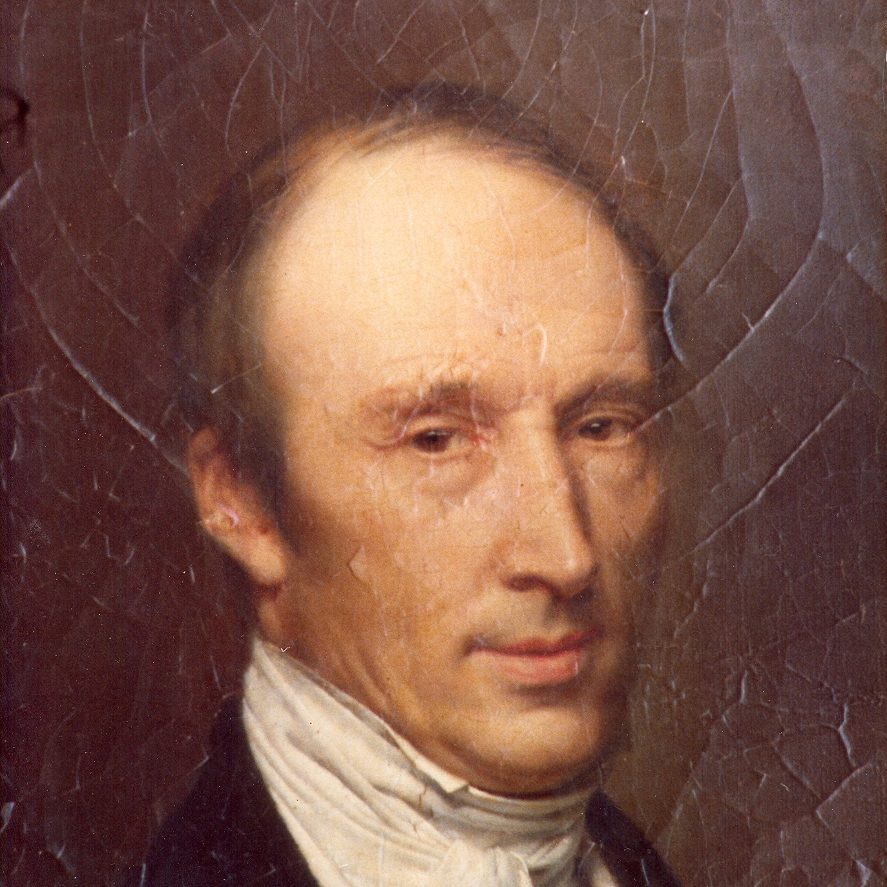

Об ученом

Барон Огюсте́н Луи́ Коши́
Французский математик и механик, член Парижской академии наук, Лондонского королевского общества, Петербургской академии наук и других академий. Разработал фундамент математического анализа, внёс огромный вклад в анализ, алгебру, математическую физику и многие другие области математики; один из основоположников механики сплошных сред. Его имя внесено в список величайших учёных Франции, помещённый на первом этаже Эйфелевой башни.
Цитата дня
Об авторе


Зачем нужен этот сайт
Дань уважения
Луи Коши — действительно великий человек, внесший огромный в математику в целом. Он заслуживает того, чтобы о нем знал весь мир, и наша миссия — популяризировать этого великого ученого и его по-настоящему великие открытия!
Вдохновение для читателей
Наш проект называется «Цитаты Коши». Его концепция — выкладывать цитаты великого ученого, тем самым не только популяризируя его самого, но и вдохновляя читателей совершать свои собственные, даже если маленькие, подвиги.
Сохранение памяти
Луи Коши внес неописуемый вклад в математический анализ и математическую физику. Создавая сайт, мы можем навеки запечатлеть этого великого ученого в сети Интернет. Это — наше «спасибо» выдающемуся математику.